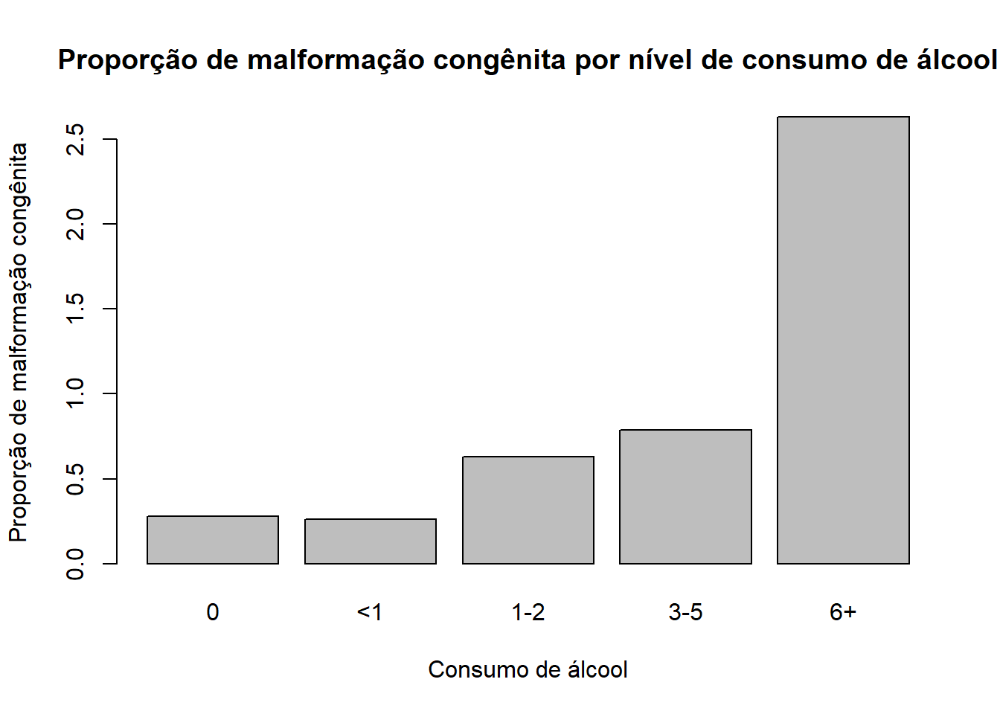

alpha<-0.1sup<- pia -qnorm(1-(alpha/2))*sqrt((pia*(1-pia))/n)inf<- pia +qnorm(1-(alpha/2))*sqrt((pia*(1-pia))/n)ic <-data.frame(sup,inf)kable(round(ic,2),align='c')
O risco relativo é de 1.01, com intervalo de confiança de 0.95 a 1.09. Isso significa que a chance de acreditar em vida após a morte é 1.02 vezes maior para mulheres do que para homens, ou seja 1.01% maior.
Risco relativo -> probabilidade de um evento ocorrer em um grupo dividido pela probabilidade de um evento ocorrer em outro grupo.
Odds ratio é de 1.22, com intervalo de confiança de 0.89 a 1.67. Isso significa que a chance de acreditar em vida após a morte é 1.22 vezes maior para mulheres do que para homens.
Odds ratio -> razão de chances de um evento ocorrer em um grupo dividida pela razão de chances de um evento ocorrer em outro grupo.
16 de abril
Descrição da atividade
Testes de Qui Quadrado (Independência) para os dados de identificação partidária.
Hipóteses:
\[
\begin{cases}
H_{0}: \mbox{X e Y independentes, ou seja $\pi_{ij} = \pi_{i.}\pi_{.j}$} \\
H_{1}: \mbox{X e Y dependentes, ou seja $\pi_{ij} \neq \pi_{i.}\pi_{.j}$}
\end{cases}
\]
Ou seja, a chance de se identificar como Republicano (em vez de Democrata) é 0.7% menor para homens do que para mulheres.
18 de abril
Descrição da atividade
Calcular Razao de Verossimilhança para os dados de identificação partidária.
Hipóteses:
\[
\begin{cases}
H_{0}: \mbox{X e Y independentes, ou seja $\pi_{ij} = \pi_{i.}\pi_{.j}$} \\
H_{1}: \mbox{X e Y dependentes, ou seja $\pi_{ij} \neq \pi_{i.}\pi_{.j}$ para qualquer $i,j$}
\end{cases}
\]
\(G^2\) tem distribuição Qui Quadrado com V graus de liberdade, onde V é o nº de parâmetros sob \(H_1\) - o nº de parâmetros sob \(H_0\),
Sob \(H_1\), \(V_1=(i*j)-1\)
Sob \(H_0\), \(V_0=(i-1)+(j-1)\)
Logo,
\(V=V_1-V_0\)
\(V=(i*j)-1-\left[(i-1)+(j-1)\right]\)
\(V=(j-1)(i-1)\)
Como \(i=2\) e \(j=3\), então \(V=2\)
Sabe-se que para \(\alpha=0.05\), \(G_{crit}=\) 5.99. Logo, como \(G^2\) é maior que \(G_{crit}\), rejeita-se \(H_0\).
Em amostras grandes, \(G^2\) terá um resultado muito próximo ao de \(\chi^2\). Mas em amostras pequenas, \(G^2\) é mais confiável/robusto.
Exercício - Consumo de álcool e mal formação congênita
Identifique as variáveis em estudo e classifiqye quanto ao tipo.
Identifique a variável resposta e a variável explicativa.
Determine a proporção de presença de malformação congênita para cada nível de consumo de álcool e analise os resultados obtidos.
Verifique se a presença de malformação congênita está associada ao consumo de álcool das mães a um nível de significância de 5%. e tratando as variáveis como qualitativas nominais e ordinais.
Comente a decisão tomada considerando o nível de significância solicitado. A decisão seria a mesma para outro nível de significância? Qual seria sua recomendação?
Os pressupostos do teste foram atendidos? O que poderia ser feito?
Refaça o teste utilizado no item 4 agregando categorias para contornar o problema indicado no item 4b. Comente o a decisão tomada com relação aos aspectos considerados nos itens 4a e 4b.
Os resultados dos testes realizados permitem concluir sobre a existência de tendências na associação entre as variáveis considerando o nível de consumo de álcool? Justifique sua resposta.
Construa tabelas 2 x 2 que permitam medir a associação entre presença de mal formação congênita para cada nível de consumo de álcool em relação a ausência de consumo de álcool. Comente os resultados. Eles sugerem alguma tendência?
barplot(p_i,main='Proporção de malformação congênita por nível de consumo de álcool',xlab='Consumo de álcool',ylab='Proporção de malformação congênita')

Teste de Qui Quadrado para associação/independência.
Hipóteses:
\[
\begin{cases}
H_{0}: \mbox{Consumo de álcool e malformação congênita são independentes} \\
H_{1}: \mbox{Consumo de álcool e malformação congênita são dependentes}
\end{cases}
\]
No entanto, é possível identificar algumas limitações:
No teste de Qui Quadrado, como a necessidade de amostras grandes (na amostra existem caselas com frequência esperada menor que 5).
No teste Qui Quadrado não é levada em consideração de ordem entre as categorias (consumo de álcool é uma variável ordinal).
É possível identificar uma associação, mas não a direção da associação (quanto maior o consumo de álcool, maior a probabilidade de malformação congênita?). O apoio gráfico é útil para identificar a direção da associação.
A decisão muda para outros níveis de significância. Para \(\alpha=0.01\), a decisão seria a mesma. Para \(\alpha=0.10\), a decisão seria diferente. A recomendação é que sejam realizados testes de associação com amostras maiores e que sejam consideradas outras técnicas de análise.
Os pressupostos do teste Qui Quadrado são: independência entre as categorias, frequências esperadas maiores que 5 e amostras grandes. Uma solução possível é agrupar as categorias de consumo de álcool em três categorias: Zero consumo (0), Baixo consumo (1-2) e Alto consumo(3+). E caso ainda haja frequências esperadas menores que 5, é possível agrupar as categorias em duas categorias: Zero consumo (0) e Consumo (1+).
Assim, a chance de malformação congênita é 2.26 vezes maior para mães que consomem de 1 a 2 doses de álcool por dia do que para mães que não consomem álcool. Ou seja, a chance de malformação congênita é 0.44% menor para que não consomem álcool.
Teste de Qui Quadrado para associação/independência com categorias agrupadas.
Logo, rejeita-se \(H_0\). No entanto, é possível observar que ainda com esse agrupamento, existem frequências esperadas menores que 5 e que \(H_0\) não é rejeitada em todos os níveis de significância. Assim, é possível tentar mais uma vez mas agrupando as categorias em duas categorias: Zero consumo (0) e Consumo (1+).
Hipóteses: \[
\begin{cases}
H_{0}: \mbox{Veredito de pena de morte independe da raça do réu} \\
H_{1}: \mbox{Existe dependência entre veredito de pena de morte e raça do réu}
\end{cases}
\]
qui <-chisq.test(obs)kable(qui$expected, align='c')
Sim
Não
B
48.72997
434.27
N
19.27003
171.73
res <-data.frame(qui$statistic, qui$p.value)kable(res,align='c')